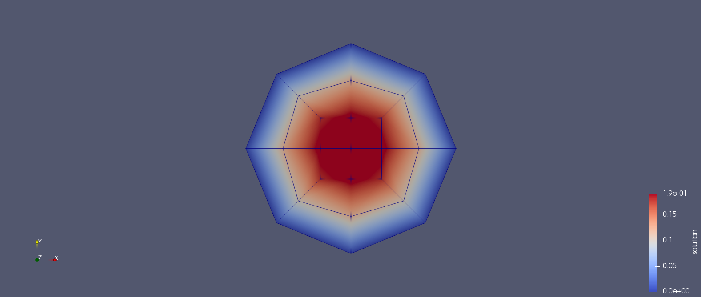
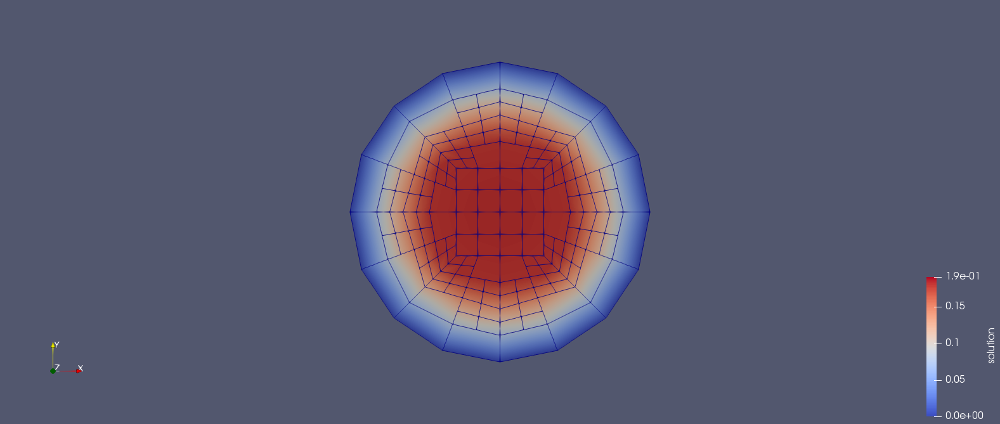
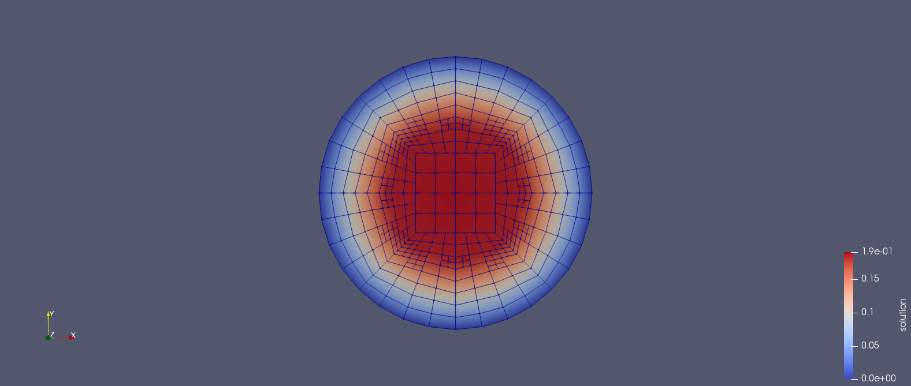
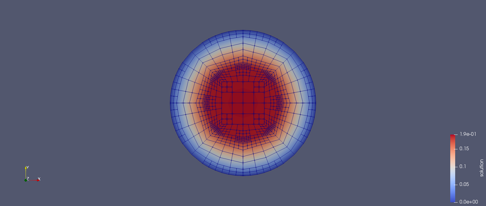
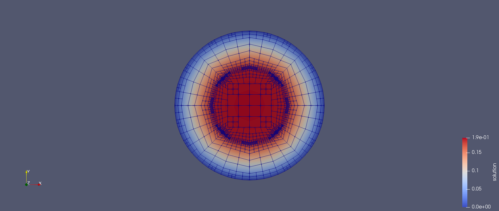
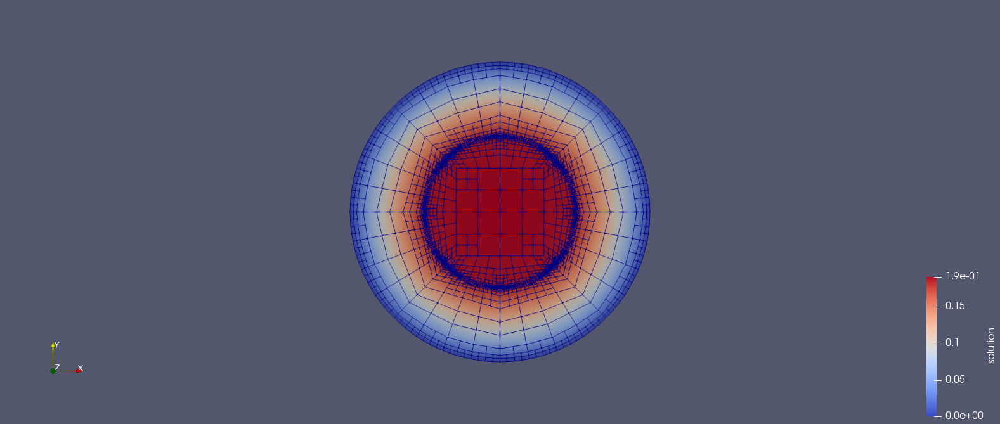
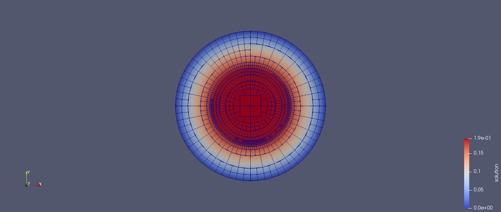
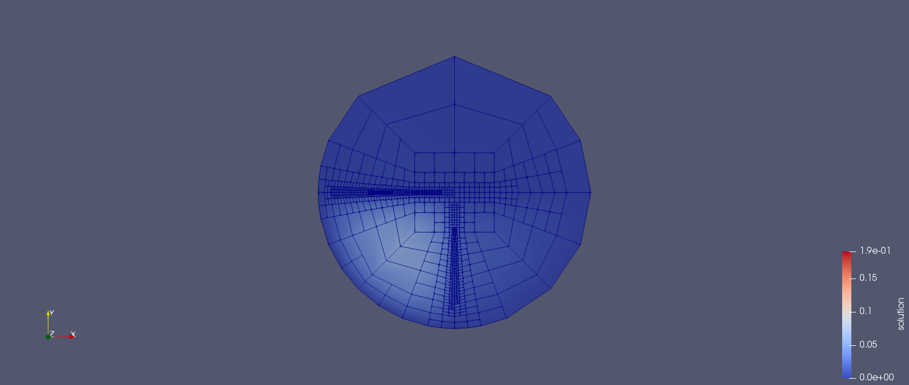
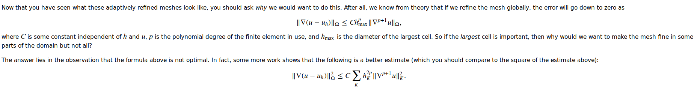

2019.09.28 Step-6 StudyThe step-6 is mainly talking about how deal.ii is doing adaptive mesh refinement.
We can run the default code and derive the results.






Now I will go through some the possible extensions thought out by myself.
- Computational time test
1 | PreconditionSSOR<> preconditioner; |
Default SSOR preconditioner-16s.
1 | PreconditionSSOR<> preconditioner; |
Default SSOR preconditioner with 1.0 parameter-16s.
1 | PreconditionSSOR<> preconditioner; |
Default SSOR preconditioner with parameter 0.12-23s.
1 | PreconditionJacobi<> preconditioner; // Jacobi as a preconditioner |
Jacobi preconditioner-9s
1 | SparseILU<double> preconditioner; |
Incomplete LU decomposition-11 s.
Jacobi preconditioner is the fastest!
- Better mesh
1
2
3
4
5
6
7
8
9
10
11
12
13
14
15template<int dim>
void Step6<dim>::make_grid()
{
GridGenerator::hyper_ball (triangulation);
// after GridGenerator::hyper_ball is called the Triangulation has
// a SphericalManifold with id 0. We can use it again on the interior.
const Point<dim> mesh_center;
for (const auto &cell : triangulation.active_cell_iterators())
if (mesh_center.distance (cell->center()) > cell->diameter()/10)
cell->set_all_manifold_ids (0);
triangulation.refine_global (1);
// GridGenerator::hyper_ball(triangulation);
// triangulation.refine_global(1);
// // triangulation.execute_coarsening_and_refinement(/*1*/);
}
In addition, I found no improvement. Moreover, I didn’t understand the meaning of the following
1 | if (mesh_center.distance (cell->center()) > cell->diameter()/10) |
Further improved mesh:
1 | template<int dim> |

The mesh is still not ideal in my opinion. I must miss something.
- Play with coefficient
1
2
3
4
5
6
7
8
9
10
11
12
13
14
15
16
17template<int dim>
double coefficient (const Point<dim> &p)
{
if ((p[0] < 0) && (p[1] < 0))
return 1;
else if ((p[0] >= 0) && (p[1] < 0))
return 10;
else if ((p[0] < 0) && (p[1] >= 0))
return 100;
else if ((p[0] >= 0) && (p[1] >= 0))
return 1000;
else
{
Assert (false, ExcInternalError());
return 0;
}
}

Future work:
The FEM information flow control should recieve more attention, such as how exactly the boundary_values are applied on the final linear equations system.
The “friend” and “virtual” in C++ is still not crystal clear and should be further studied.
I don’t understand how the error estimation inequality is derived.
Manifold unclear either.
The official tutorial document is as follows,
https://www.dealii.org/current/doxygen/deal.II/step_6.html